血糖高，三餐怎么吃？把这些小动作放进每天
不敢吃苹果，却一盘盘吃馒头、饺子；坚果一抓就是一大把。糖不吃了，血糖怎么还是高？先看清这些容易忽略的地方。
米饭、面条、馒头里的淀粉，消化后会变成葡萄糖。胰岛素帮助身体利用它；胰岛素不够，或身体反应变差，血糖就容易高。肝脏没吃饭时也会释放葡萄糖，所以空腹高，未必只是昨晚吃多了。
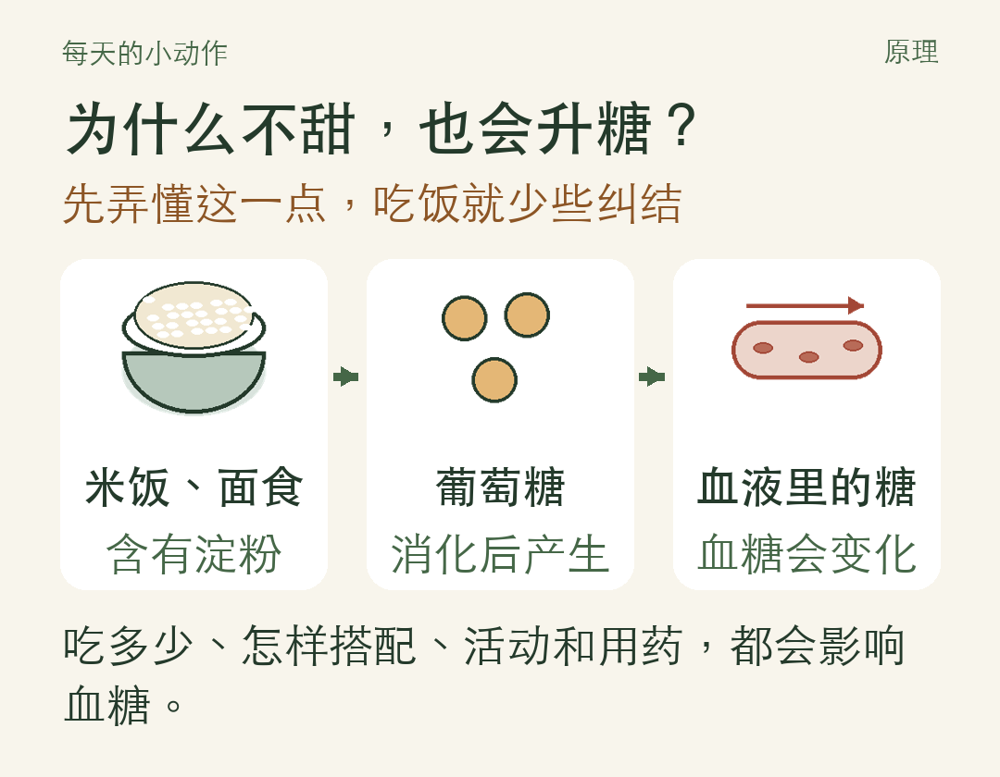
01 一餐先搭好，份量看自己
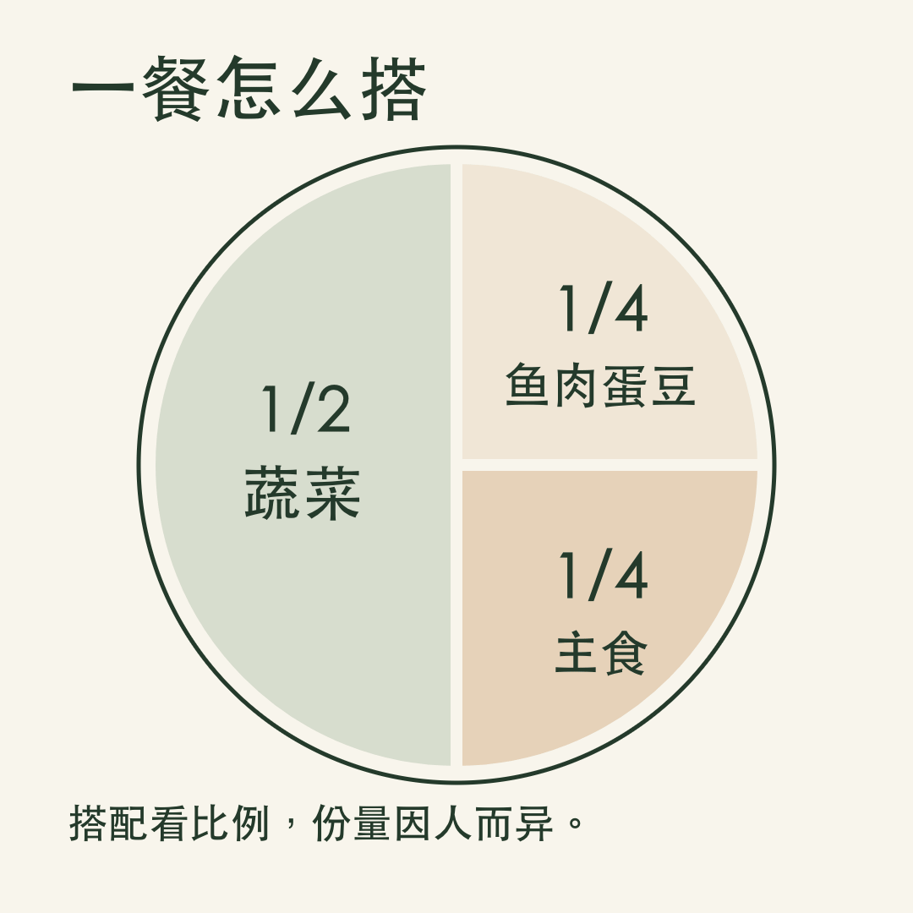
一半放绿叶菜、黄瓜、番茄等蔬菜；四分之一放鱼、瘦肉、蛋、豆腐；剩下四分之一放主食。土豆、玉米、红薯也要算进主食。
图里看的是搭配，份量要结合体重、活动和用药。年纪大、偏瘦、没力气的人，别只剩几口饭和青菜，吃够营养、保住肌肉同样要紧。
02 饭先盛好，吃饭别赶
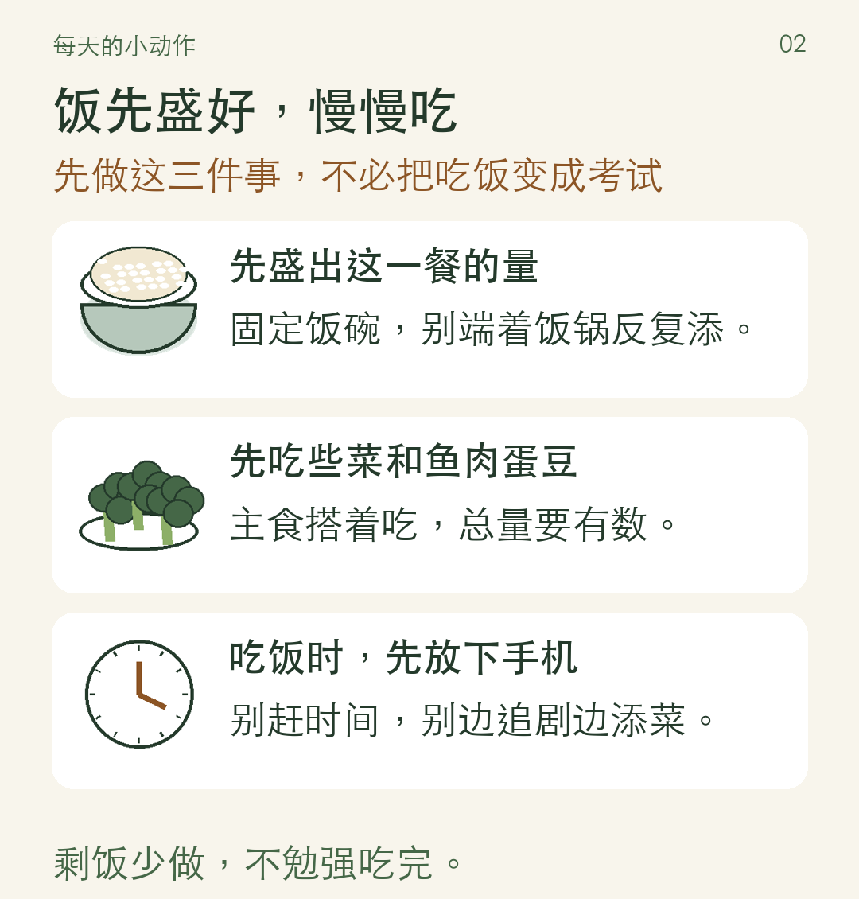
先吃些蔬菜和鱼肉蛋豆，再搭着吃主食，可能让部分人的餐后血糖上升缓一些。主食总量仍要控制，不必把一碗白饭硬留到最后。
坐下来慢慢吃，不用规定每口嚼几十下。剩饭少做、妥善保存，不为“别浪费”勉强吃完。
03 汤可以喝，配料要看清
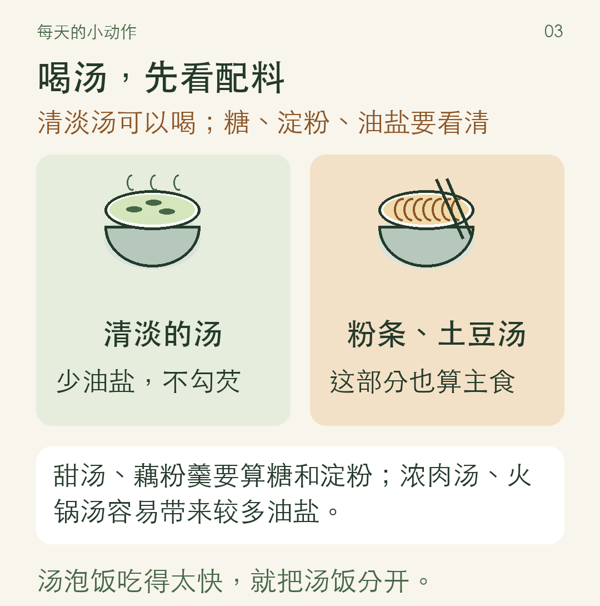
不用一概规定“吃饭不能喝汤”，餐前餐后也不必强行禁水。若汤泡饭让你几口就吞下一大碗，把汤和饭分开，吃慢一点。
日常喝水少量多次，别等口渴才想起。医生要求限制饮水的人，按自己的方案来。
04 粗粮换一部分，别再加一份
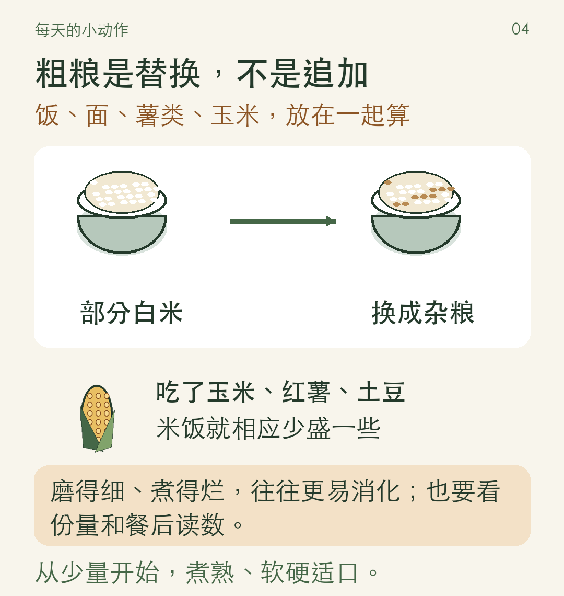
完整谷粒通常比磨得细、煮得烂的米糊和杂粮粉消化慢一些。粗粮从少量开始，替换部分白米白面，别在原来的饭量上再添一根玉米。
牙口不好、吞咽正常，可选蒸蛋、豆腐、剔净刺的鱼和煮软的蔬菜，别长期只靠粥。经常呛咳或吞咽困难，要做进食评估。
05 水果、坚果先分份，饮料换白水
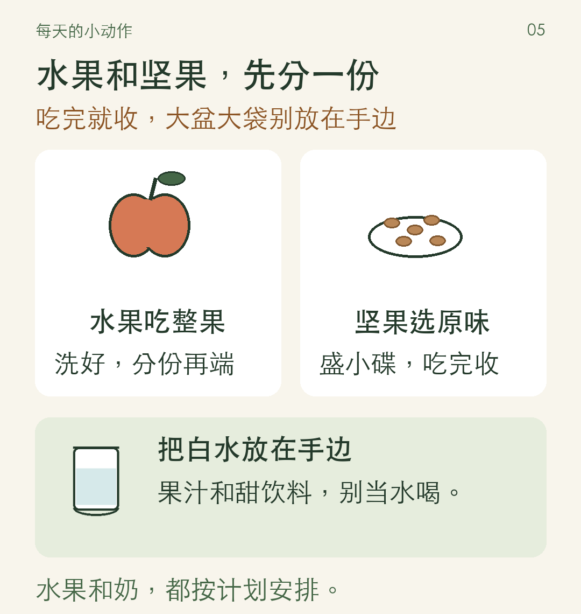
多数人能把水果放进饮食计划。水果、坚果先按饮食计划分好量，头几次用厨房秤称一称，别凭手感越抓越多。水果选整果，换到两餐之间吃，也不能忽略份量。
普通牛奶可以按计划喝。买酸奶、豆浆、芝麻糊时，看有没有额外加糖和淀粉；别只听“益生菌”“高蛋白”的宣传。
06 买东西，包装翻过来看
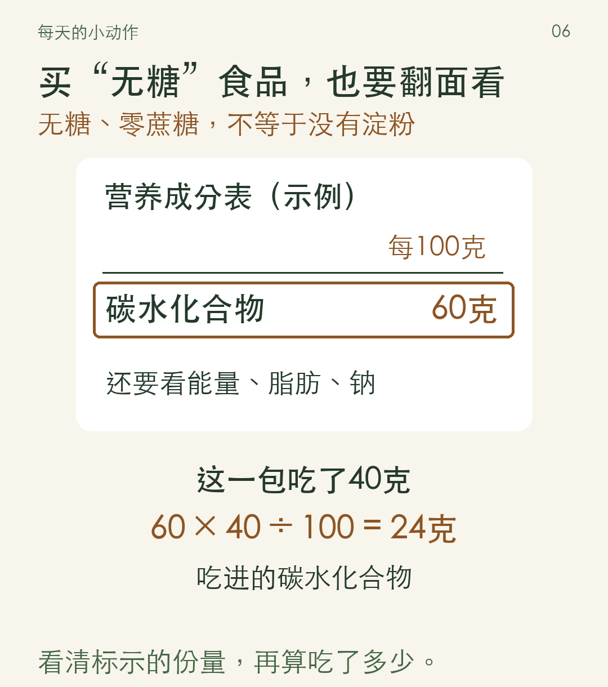
“无糖”“零蔗糖”不等于没有淀粉。先看碳水化合物，再看能量、脂肪和钠；分清每100克还是每份，最后算自己吃了多少。
油用带刻度的油壶，蘸料先盛小碟。酱油、蚝油和咸菜里的盐，也别漏算。醋可以调味，茶可以按习惯喝，都不能代替降糖治疗。
07 出门吃饭，别饿着肚子去凑一顿
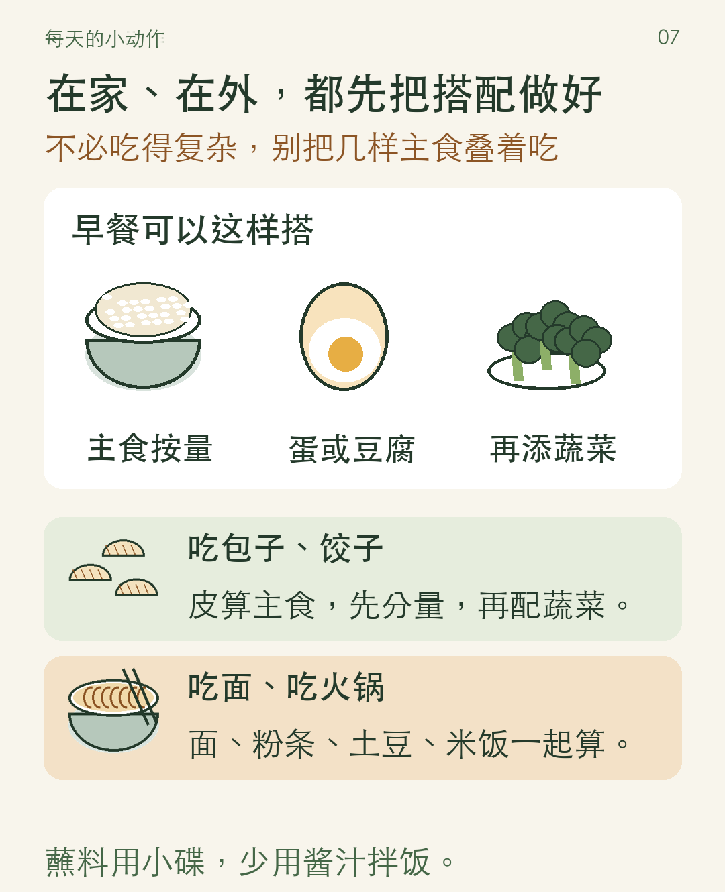
聚餐前几餐照常安排，别饿一天“留肚子”。点菜尽量把饭、菜、酱分开，先盛出自己的量。
用了胰岛素，或格列美脲、格列齐特等容易引起低血糖的药，突然少吃、漏餐、拖着不吃，都可能出问题。想大幅减主食或断食，先和医生调整方案。
08 饭后走一会儿，睡觉尽量规律
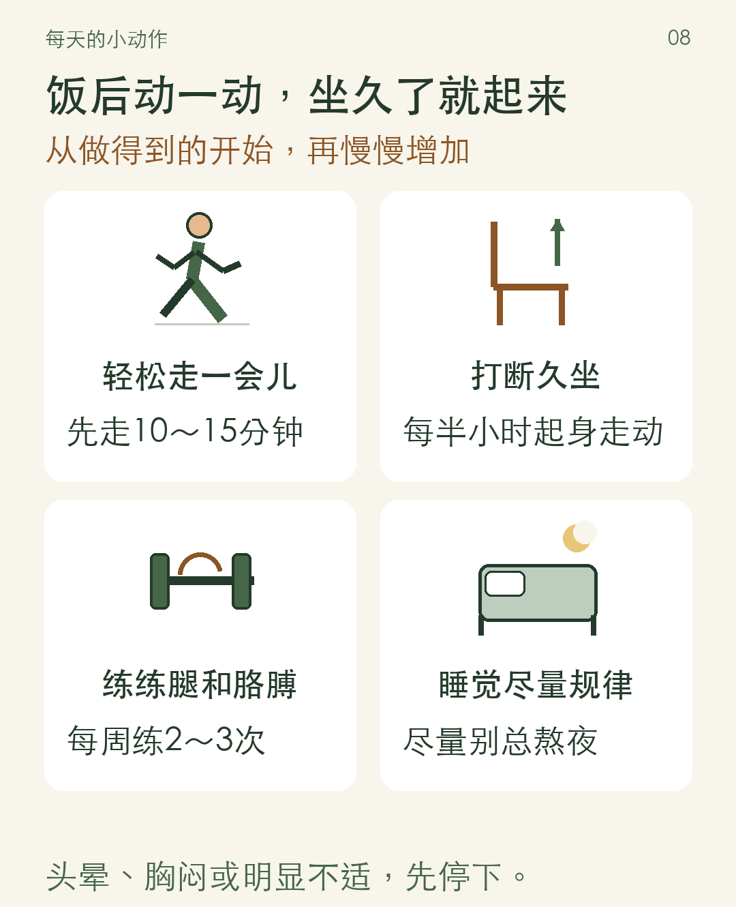
肌肉活动时会利用葡萄糖。身体稳定、平时活动少的人，可从饭后舒服时轻松走10～15分钟开始；穿合脚的鞋、选平路，家人一起更容易坚持。
体力允许，多数成人可逐渐达到每周至少150分钟中等强度活动，再加每周2～3次合适的力量练习。体弱者量力而行，扶稳后坐下再站起等动作，也可请医生或康复人员指导。
容易低血糖的人，按方案监测，随身备葡萄糖。血糖很高又身体不适时，不靠运动硬降。
09 测血糖，记清时间和这一餐
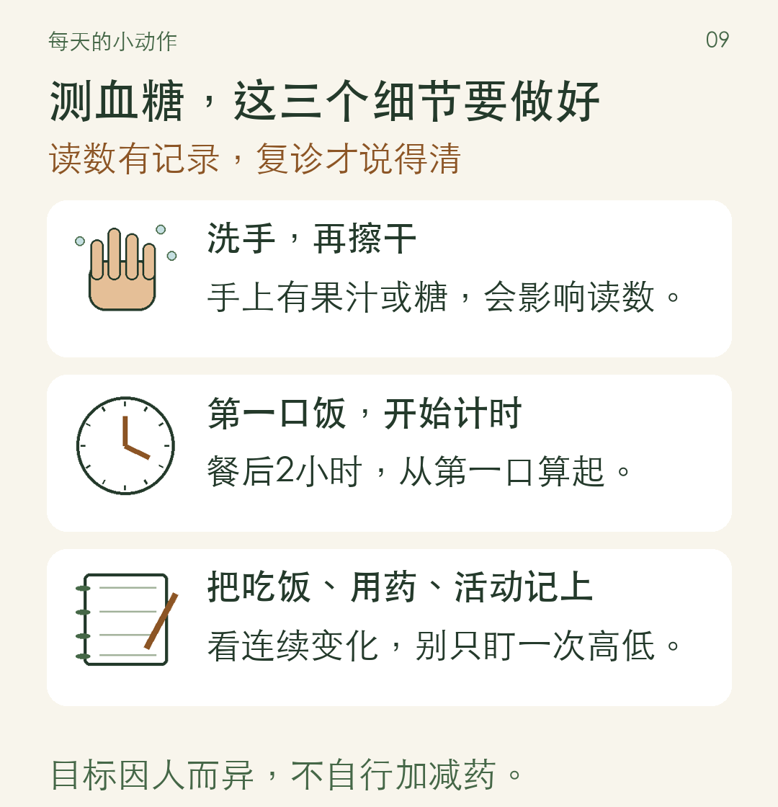
从筒里取出试纸后，马上盖紧筒盖；独立包装的试纸按说明取用、保存。监测频次按治疗方案安排，小本子记下测量时间、读数、吃了什么、有没有活动和漏药，复诊时带上。
老年人、有过低血糖的人，血糖目标更要按身体情况确定。家用仪器不能凭一次读数确诊，也别拿别人家的目标套自己。
10 这几件事，家里人也要知道
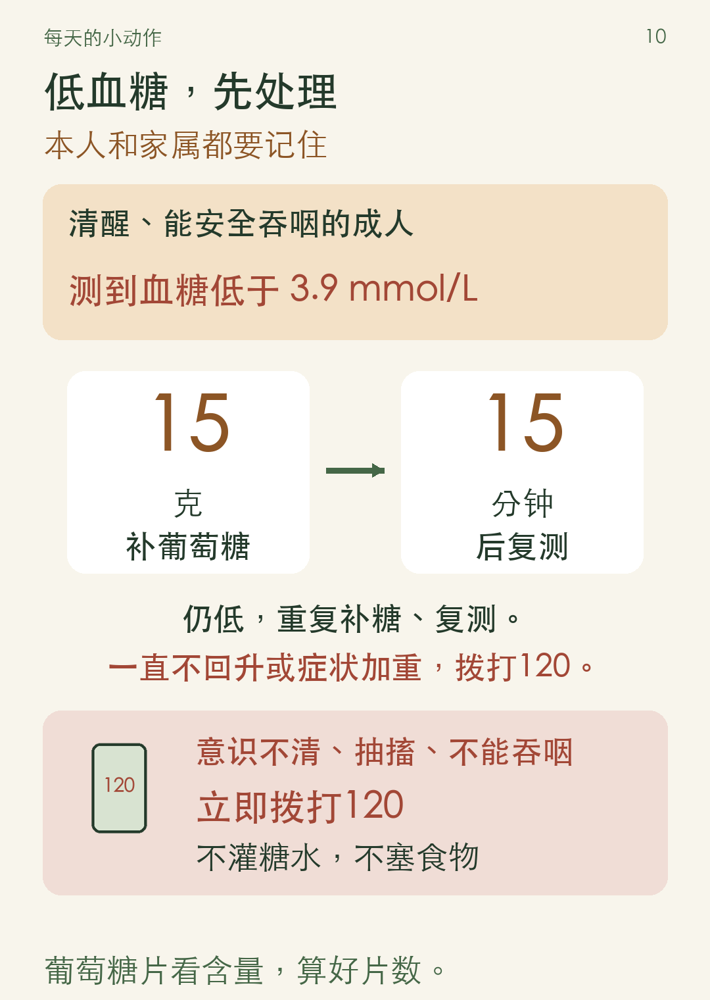
心慌、手抖、出汗、头晕，要想到低血糖。葡萄糖片看包装含量算片数；巧克力、坚果不宜作为首选急救食物。吃阿卡波糖的人尤其要用葡萄糖。纠正后若离下一餐还久，按治疗计划补充食物；反复发生低血糖，要复诊调整方案。
持续呕吐、腹痛、呼吸异常、明显脱水或意识改变，要尽快急诊。吃达格列净、恩格列净的人，即使血糖不特别高，也要重视。
生病、吃不下时，按医生事先交代的方案处理，别自行停基础胰岛素。每天看看足底和趾缝，不赤脚，不用烫水泡脚或热水袋暖脚；按医嘱复查眼底、肾脏和足部。
这周先选两件：饭先盛好，或者饭后走一会儿。家人把常吃的几套搭配、测血糖时间和医生交代的事，写成大字纸条贴在冰箱旁。一起买菜、分餐、散步，少在饭桌上反复说“这个不能吃”。不靠酒、降糖茶或保健品替代治疗；戒烟也要认真做。
本文主要适用于糖尿病前期和2型糖尿病的成年人。孕期、1型糖尿病、肾功能异常、明显消瘦或吞咽困难者，需要单独制定方案。具体份量、血糖目标和用药，按个人情况确定。